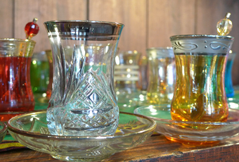
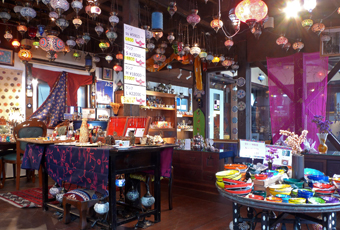
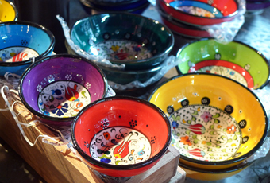

SHOP INFORMATIONトルコ雑貨＆カフェ ぎゃるぎゃる
素敵なトルコ雑貨に出会えるショップ

町家や土蔵を改装したお店などが立ち並ぶ本町に位置する「トルコ雑貨＆カフェ ぎゃるぎゃる」。トルコで買い付けたトルコ絨毯や、キリムと呼ばれる平織りの毛織物、チャイグラス、ランプなどの雑貨が店内にたくさん並んでいます。雑貨の他には、トルコアイスやトルコの紅茶、トルココーヒーなどをいただくこともできます。
インテリアに彩りを添えてくれるグラスやランプ

最低でも100年は使えると言われているトルコ絨毯。様々な柄が揃っているので、部屋の雰囲気に合った１枚を探してみてはいかがでしょう。陶器の小皿や鍋敷きなどの小物も人気です。トルコのお守りストラップや、杏・いちじく・ぶどうなどのドライフルーツ、薔薇のジャムなど、お土産に最適な商品もたくさん並んでいます。
気軽に買える小物も豊富に品揃え
最低でも100年は使えると言われているトルコ絨毯。様々な柄が揃っているので、部屋の雰囲気に合った１枚を探してみてはいかがでしょう。陶器の小皿や鍋敷きなどの小物も人気です。トルコのお守りストラップや、杏・いちじく・ぶどうなどのドライフルーツ、薔薇のジャムなど、お土産に最適な商品もたくさん並んでいます。
観光に便利な場所

倉敷駅から歩いて約15分の場所にある「トルコ雑貨＆カフェ ぎゃるぎゃる」。周辺には「倉敷アイビースクエア」や「大原美術館」などの人気観光スポットがたくさんあります。広々とした店内には様々なトルコ雑貨がずらっと並び、インテリアや雑貨に興味のある人ならだれでも楽しめる空間です。気軽に入りやすいお店なので、一度立ち寄ってみてください。
Googleマップでみる
一覧に戻る